별(재화)
화면에 보이는 이모지·기호 491건(어드민 제외). 별콩이 지시문·코드 메모 122건은 맨 아래에 따로 뒀어요. 줄을 누르면 파일 위치가 펼쳐져요.
하단 탭·섹션 마커와 같은 규칙: 24칸 면 글리프, 별콩이 4꼭지 별을 구멍으로. 한 칸에 16·24·40px, 아래는 밤 배경. 상품·고민 분류는 이미 있는 일러스트(도구함) 그대로이고, 이건 작은 기능 표시용이에요.
고민 10 · 운세 일부 · 우리 사이 2 · 별콩이 표정. 이모지 대신 이걸로 맞춰요.
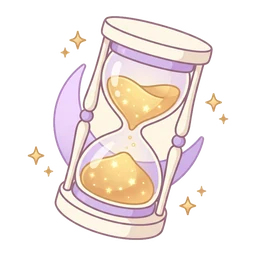
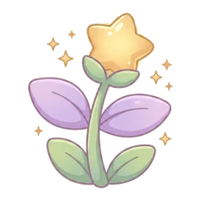
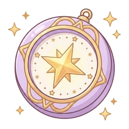
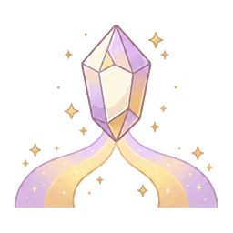
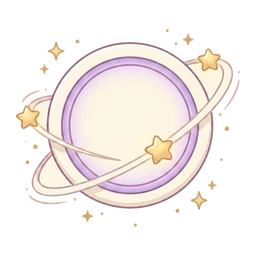
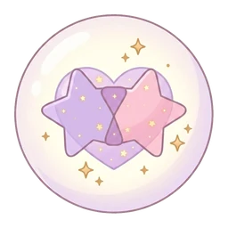
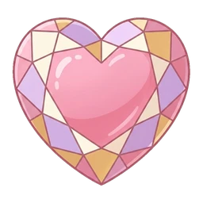
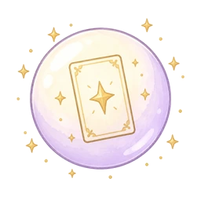
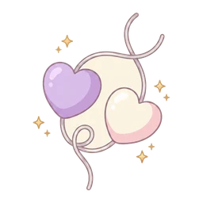
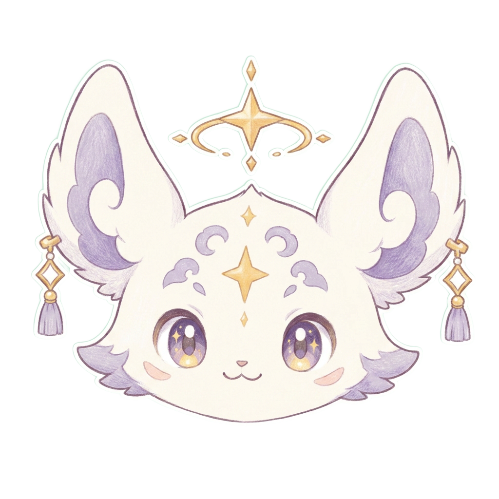
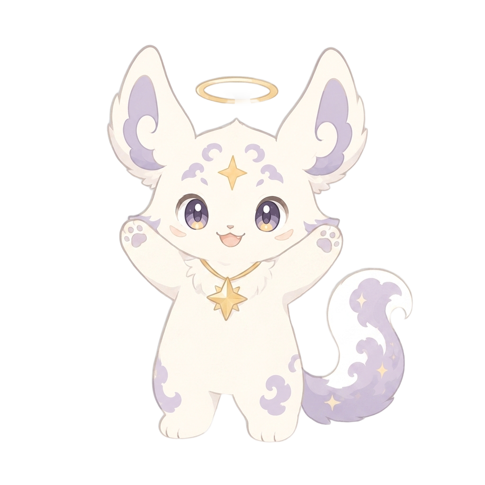
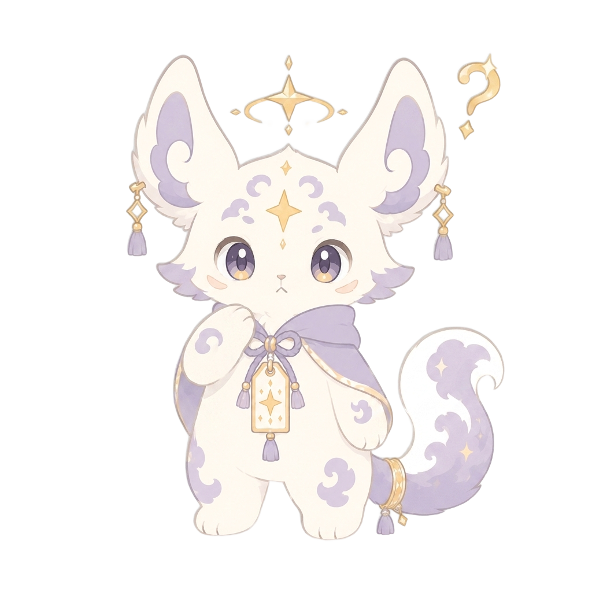
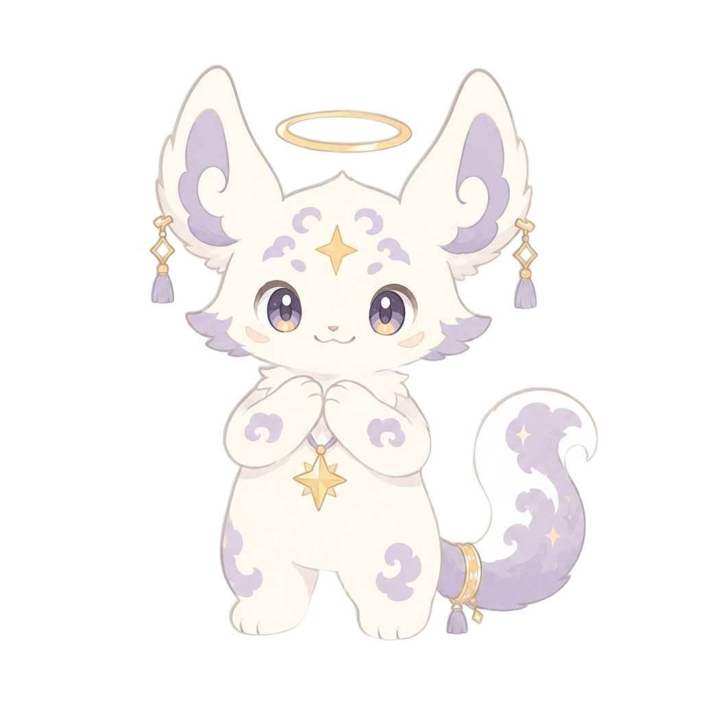
app/relationship/page.tsx:787 📌 — 하루 대화량 FAQapp/relationship/sim/page.tsx:242 🎁 — 이번 판 무료app/start/page.tsx:434 📌 — 하루 대화량 FAQcomponents/fortune/DaeunTable.tsx:31 🌌 — 대운 10년 흐름components/fortune/DailyReportCard.tsx:140 ⚖ — 오늘의 균형components/fortune/ElementBalanceView.tsx:26 🌈 — 내 오행 분포components/fortune/ElementBalanceView.tsx:57 🌈 — accentEmoji(폐기된 prop)components/fortune/ElementChart.tsx:27 🌈 — 내 오행 분포components/fortune/ElementCycleDiagram.tsx:61 🔄 — 오행 상생상극components/fortune/LifeGraphView.tsx:54 📉 — 인생 곡선components/fortune/LifeGraphView.tsx:65 ☀ — 가장 빛나는 시기components/fortune/LifeGraphView.tsx:69 🌙 — 웅크리며 준비할 시기components/fortune/LifeGraphView.tsx:87 🌙 — 별콩이의 한마디components/fortune/ReportCardView.tsx:25 🏆 — 사주 성적표components/fortune/ReportCardView.tsx:56 📝 — 담임 총평components/fortune/ReportCardView.tsx:63 🌙 — 별콩이의 한마디components/fortune/compat/CompatMatchDiagram.tsx:68 💞 — 궁합 한눈에components/fortune/compat/CompatReportView.tsx:39 💘 — 끌림·성격 케미components/fortune/compat/CompatReportView.tsx:40 🌗 — 갈등 포인트components/fortune/compat/CompatReportView.tsx:41 💬 — 잘 통하는 대화법components/fortune/compat/CompatReportView.tsx:42 🌱 — 장기 전망components/fortune/compat/CompatReportView.tsx:43 🌿 — 관계 성장 포인트components/fortune/compat/CompatReportView.tsx:46 🤝 — 성향 케미(인간관계)components/fortune/compat/CompatReportView.tsx:47 🌗 — 부딪히는 지점(인간관계)components/fortune/compat/CompatReportView.tsx:48 💬 — 소통의 결(인간관계)components/fortune/compat/CompatReportView.tsx:49 🌱 — 관계의 미래(인간관계)components/fortune/compat/CompatReportView.tsx:50 🌿 — 관계 성장 포인트(인간관계)components/fortune/compat/CompatReportView.tsx:69 🔮 — 오행 케미components/fortune/compat/CompatReportView.tsx:75 👥 — 두 사람 각자의 모습components/fortune/compat/CompatReportView.tsx:76 📈 — 관계 시기별 흐름components/fortune/compat/CompatReportView.tsx:77 🩹 — 다툼과 화해의 기술components/fortune/compat/CompatReportView.tsx:78 💞 — 애정·거리감 표현법components/fortune/compat/CompatReportView.tsx:79 💌 — 서로의 사랑의 언어components/fortune/compat/CompatReportView.tsx:80 🚦 — 위기 신호와 조기 대응components/fortune/compat/CompatReportView.tsx:81 🌵 — 각자 조심할 습관components/fortune/compat/CompatReportView.tsx:82 ✨ — 관계에 활기를 더하는 법components/fortune/compat/CompatReportView.tsx:85 💡 — 관계를 위한 조언components/fortune/monthly/MonthlyReportView.tsx:23 🌙 — 이번 달 들어온 두 글자components/fortune/monthly/MonthlyReportView.tsx:26 🗓 — 주차별 흐름components/fortune/monthly/MonthlyReportView.tsx:42 🤝 — 인간관계·귀인components/fortune/monthly/MonthlyReportView.tsx:43 💗 — 마음·감정 컨디션components/fortune/monthly/MonthlyReportView.tsx:44 🎯 — 이번 달 실천 포인트components/fortune/monthly/MonthlyReportView.tsx:47 📌 — 주목할 시기·챙길 점components/fortune/saju-full/SajuFullReportView.tsx:46 🌱 — 타고난 기질·성격components/fortune/saju-full/SajuFullReportView.tsx:47 💎 — 나의 강점components/fortune/saju-full/SajuFullReportView.tsx:48 🌿 — 조심할 성향components/fortune/saju-full/SajuFullReportView.tsx:52 ⚖ — 오행 밸런스 진단components/fortune/saju-full/SajuFullReportView.tsx:65 🧭 — 타고난 적성components/fortune/saju-full/SajuFullReportView.tsx:68 🌊 — 2026 큰 흐름components/fortune/saju-full/SajuFullReportView.tsx:69 💗 — 마음·감정 흐름components/fortune/saju-full/SajuFullReportView.tsx:70 💘 — 사랑·인연components/fortune/saju-full/SajuFullReportView.tsx:71 🤝 — 인간관계·사회components/fortune/saju-full/SajuFullReportView.tsx:72 💼 — 일·커리어components/fortune/saju-full/SajuFullReportView.tsx:73 💰 — 재물·금전components/fortune/saju-full/SajuFullReportView.tsx:74 🌿 — 건강·컨디션components/fortune/saju-full/SajuFullReportView.tsx:75 📚 — 학업·자기계발components/fortune/saju-full/SajuFullReportView.tsx:76 🧳 — 이동·변화components/fortune/saju-full/SajuFullReportView.tsx:77 🏡 — 가족·주변components/fortune/saju-full/SajuFullReportView.tsx:78 💰 — 재물 심층components/fortune/saju-full/SajuFullReportView.tsx:79 💼 — 일·커리어 심층components/fortune/saju-full/SajuFullReportView.tsx:80 💘 — 연애 심층components/fortune/saju-full/SajuFullReportView.tsx:81 🌿 — 건강 심층components/fortune/saju-full/SajuFullReportView.tsx:82 🌅 — 2026 상반기components/fortune/saju-full/SajuFullReportView.tsx:83 🌇 — 2026 하반기components/fortune/saju-full/SajuFullReportView.tsx:84 🍀 — 1분기components/fortune/saju-full/SajuFullReportView.tsx:85 ☀ — 2분기components/fortune/saju-full/SajuFullReportView.tsx:86 🍁 — 3분기components/fortune/saju-full/SajuFullReportView.tsx:87 ❄ — 4분기components/fortune/saju-full/SajuFullReportView.tsx:88 🔀 — 전환점·변화 포인트components/fortune/saju-full/SajuFullReportView.tsx:92 🎯 — 놓치면 아까운 기회components/fortune/saju-full/SajuFullReportView.tsx:98 ⚠ — 조심할 함정components/fortune/saju-full/SajuFullReportView.tsx:101 🗺 — 2026 인연 지도components/fortune/saju-full/SajuFullReportView.tsx:102 🧭 — 관계 지도 확장components/fortune/saju-full/SajuFullReportView.tsx:103 🎯 — 올해의 성장 과제components/fortune/saju-full/SajuFullReportView.tsx:109 📅 — 2026 월별 흐름components/fortune/saju-full/SajuFullReportView.tsx:148 🍀 — 2026 행운 가이드components/fortune/saju-full/SajuFullReportView.tsx:161 🕯 — 2026 개운법components/fortune/saju-full/SajuFullReportView.tsx:162 🌈 — 오행 활용법components/fortune/saju-full/SajuFullReportView.tsx:163 🛁 — 셀프케어 루틴components/fortune/saju-full/SajuFullReportView.tsx:167 📌 — 올해 실천 3가지components/relationship/ThreadCompatCard.tsx:53 🔮 — 오행 케미components/relationship/ThreadCompatCard.tsx:54 💘 — 끌림·성격 케미components/relationship/ThreadCompatCard.tsx:55 🌗 — 갈등 포인트components/relationship/ThreadCompatCard.tsx:56 💬 — 잘 통하는 대화법components/relationship/ThreadCompatCard.tsx:57 🌱 — 장기 전망components/relationship/ThreadCompatCard.tsx:58 🌿 — 관계 성장 포인트components/relationship/ThreadCompatCard.tsx:60 💡 — 관계를 위한 조언components/relationship/ThreadCompatCard.tsx:74 🌙 — 별콩이의 한마디components/relationship/sim/SimDebrief.tsx:131 💌 — 이 사람에게 보낼 말components/relationship/sim/SimDebrief.tsx:138 🖼 — 별콩이가 알아가는 초상화components/relationship/sim/SituationSelect.tsx:64 🎭 — 연애 시뮬이 뭐야?lib/byeolmaru/card-report.ts:29 💗 — 오늘 애정·관계lib/byeolmaru/card-report.ts:30 💼 — 오늘 일·돈lib/byeolmaru/card-report.ts:31 🌙 — 카드가 비추는 마음lib/byeolmaru/card-report.ts:32 ⚠ — 오늘 조심할 하나lib/byeolmaru/card-report.ts:33 ✨ — 오늘의 한 수lib/byeolmaru/pair-report.ts:40 🌙 — 오늘 둘 사이lib/byeolmaru/pair-report.ts:41 💗 — 오늘 벌어질 장면lib/byeolmaru/pair-report.ts:42 🧭 — 너희 고정된 결lib/byeolmaru/pair-report.ts:43 ✨ — 둘 사이 타이밍lib/fortune/daily-report.ts:24 💰 — 재물운lib/fortune/daily-report.ts:25 💼 — 직장·업무운lib/fortune/daily-report.ts:26 💗 — 애정·관계운lib/fortune/daily-report.ts:27 🌿 — 건강·멘탈운lib/fortune/daily-report.ts:28 📄 — 학업·문서·이동운lib/fortune/heading.ts:19 ✦ — 이모지 없는 섹션 기본값(✦)lib/byeolmaru/card-report.ts:28 🃏 — 이 카드가 온 자리components/fortune/saju-full/SajuFullReportView.tsx:125 ⏰ — 주목할 시기app/page.tsx:167 💬 — 이어서 대화 배너app/relationship/page.tsx:502 💡 — 프로필 보강 팁app/relationship/page.tsx:736 💜 — 너만의 연애 상담 친구app/shop/page.tsx:732 🎁 — 첫 충전 보너스app/start/page.tsx:388 💜 — 너만의 연애 상담 친구components/relationship/ThreadCompatCard.tsx:32 💑 — 궁합 카드 제목components/upsell/ExtendChip.tsx:47 💬 — 대화 연장 칩components/upsell/RechargeSheet.tsx:224 🎁 — 첫 충전 보너스components/upsell/ClarifierChip.tsx:44 🃏 — 추가 카드 칩app/fortune/byeoljari/page.tsx:72 🌟 — 안내 목록 글머리app/fortune/byeoljari/page.tsx:73 💞 — 안내 목록 글머리app/fortune/byeoljari/page.tsx:74 ✨ — 안내 목록 글머리components/byeolmaru/useByeolmaruSubscribe.tsx:298 ✦ — 안내 목록 글머리components/byeolmaru/useByeolmaruSubscribe.tsx:308 ✦ — 안내 목록 글머리components/fortune/landing/FortuneLandingSections.tsx:56 ✦ — 안내 목록 글머리components/push/RevisitSheet.tsx:293 ✦ — 안내 목록 글머리app/page.tsx:267 ✦ — 구분선 ✦ 장식app/(content)/guide/spreads/page.tsx:35 ✦ — 구분선 ✦ 장식components/common/HeroDivider.tsx:10 ✦ — 구분선 ✦ 장식components/fortune/FortuneReportHeader.tsx:84 ✦ — 구분선 ✦ 장식components/saju-mbti/ResultView.tsx:204 ✦ — 구분선 ✦ 장식components/upsell/FreeToPaidCta.tsx:42 ✦ — 구분선 ✦ 장식components/byeolmaru/HubBanner.tsx:80 ✦ — 반짝임 별 장식(배경 애니메이션)components/byeolmaru/HubBanner.tsx:81 ✦ — 반짝임 별 장식(배경 애니메이션)components/byeolmaru/HubBanner.tsx:82 ✧ — 반짝임 별 장식(배경 애니메이션)components/fortune/FortuneHeader.tsx:41 ✦ — 반짝임 별 장식(배경 애니메이션)components/fortune/FortuneHeader.tsx:42 ✦ — 반짝임 별 장식(배경 애니메이션)components/fortune/FortuneHeader.tsx:43 ✧ — 반짝임 별 장식(배경 애니메이션)app/global-error.tsx:67 ✨ — 에러 화면 반짝이(56px)app/fortune/byeoljari/page.tsx:61 ✨ — 로딩 반짝임components/relationship/AddPersonSheet.tsx:93 🧸 — 인형+반짝이(30px)components/relationship/AddPersonSheet.tsx:93 ✨ — 인형+반짝이(30px)components/relationship/ThreadChat.tsx:512 💬 — 대화 시작 전 빈 상태app/relationship/page.tsx:452 ❤ — 관계 상태app/relationship/page.tsx:713 ♥ — "연애 상담" 배지app/start/page.tsx:373 ♥ — "연애 상담" 배지components/relationship/ProfileCard.tsx:82 ❤ — 상대 라벨app/(consultations)/saju/result/page.tsx:171 ❝ — 별콩이 한마디 카드app/tarot/result/page.tsx:260 ❝ — 별콩이 한마디 카드app/mypage/support/[id]/page.tsx:136 ✨ — 별콩이 답변components/relationship/sim/ByeolkongNote.tsx:14 🌙 — 별콩이 노트app/refund/page.tsx:72 📧 — 연락처 앞 메일 아이콘app/shop/page.tsx:644 😢 — 결제 실패components/relationship/sim/SituationSelect.tsx:55 🎭 — "이게 뭐야?" 칩components/safety/SafetyBanner.tsx:74 🤍 — 위기 안내 배너 아이콘(하트)components/tarot/CardDrawRitual.tsx:264 ✨ — 뽑기 의식 라벨lib/markdown-lite.tsx:184 💡 — 강조 상자(인용 블록) 아이콘(전구)app/page.tsx:149 ⭐ — 웰컴 별 배너app/(consultations)/saju/concern/page.tsx:207 ⭐ — 가격 표시app/(consultations)/saju/concern/page.tsx:227 ⭐ — 가격 표시app/(consultations)/saju/reading/page.tsx:725 ⭐ — 충전 완료 배너app/(consultations)/saju/result/page.tsx:234 ⭐ — 가격 표시app/fortune/page.tsx:91 ⭐ — 가격 표시app/mypage/page.tsx:225 ⭐ — 잔액 표시app/mypage/payments/page.tsx:129 ⭐ — 잔액 표시app/mypage/payments/page.tsx:168 ⭐ — 결제 행 별 수량app/readings/page.tsx:346 ⭐ — 사용한 별app/readings/page.tsx:367 ⭐ — 사용한 별app/relationship/page.tsx:779 ⭐ — 가격 표시app/start/page.tsx:427 ⭐ — 가격 표시app/start/page.tsx:583 ⭐ — 가격 표시app/tarot/reading/page.tsx:1416 ⭐ — 충전 완료 배너app/tarot/result/page.tsx:335 ⭐ — 가격 표시components/common/StarConfirmModal.tsx:108 ⭐ — 가격 표시components/common/StarConfirmModal.tsx:113 ⭐ — 잔액 표시components/common/StarConfirmModal.tsx:120 ⭐ — 사용 후 잔액components/continuation/ContinuationModal.tsx:263 ⭐ — 가격 표시components/continuation/ContinuationModal.tsx:270 ⭐ — 가격 표시components/continuation/ContinuationModal.tsx:280 ⭐ — 가격 표시components/fortune/AlreadyOwnedModal.tsx:46 ⭐ — 가격 표시components/fortune/FortuneReportHeader.tsx:74 ⭐ — 가격 표시components/fortune/WelcomeStarsBanner.tsx:38 ⭐ — 웰컴 별 배너components/fortune/WelcomeStarsBanner.tsx:44 ⭐ — 가격 표시components/fortune/landing/FortuneLandingSections.tsx:110 ⭐ — 가격 표시components/fortune/tarot/TarotInput.tsx:136 ⭐ — 가격 표시components/layout/AppHeader.tsx:78 ⭐ — 헤더 잔액 칩components/layout/Header.tsx:41 ⭐ — 헤더 잔액 칩components/relationship/AddPersonSheet.tsx:110 ⭐ — 가격 표시components/relationship/AddPersonSheet.tsx:119 ⭐ — 잔액 표시components/relationship/PassConfirmModal.tsx:74 ⭐ — 가격 표시components/relationship/PassPanel.tsx:34 ⭐ — 잔액 표시components/relationship/PassPanel.tsx:51 ⭐ — 가격 표시components/relationship/PassSheet.tsx:129 ⭐ — 가격 표시components/relationship/SkillSheet.tsx:53 ⭐ — 가격 표시components/relationship/ThreadChat.tsx:633 ⭐ — 가격 표시components/relationship/ThreadChat.tsx:713 ⭐ — 가격 표시components/start/WelcomeStarsModal.tsx:48 ⭐ — 잔액 표시components/tarot/SpreadPicker.tsx:174 ⭐ — 가격 표시components/upsell/ClarifierChip.tsx:56 ⭐ — 가격 표시components/upsell/ClarifierSheet.tsx:205 ⭐ — 가격 표시components/upsell/ClarifierSheet.tsx:206 ⭐ — 잔액 표시components/upsell/ClarifierSheet.tsx:228 ⭐ — 가격 표시components/upsell/cross-cards.ts:98 ⭐ — 가격 배지components/upsell/ExtendChip.tsx:63 ⭐ — 가격 표시components/upsell/FreeToPaidCta.tsx:90 ⭐ — 가격 표시components/upsell/PostEndOffers.tsx:90 ⭐ — 가격 표시components/upsell/RechargeSheet.tsx:213 ⭐ — 잔액 표시components/upsell/RechargeSheet.tsx:259 ⭐ — 충전 패키지 행components/upsell/RechargeSheet.tsx:330 ⭐ — 충전 버튼app/page.tsx:159 ↓ — 아래로 스크롤app/(consultations)/saju/reading/page.tsx:661 → — 이동·다음·결과app/fortune/byeoljari/[shareId]/page.tsx:198 → — 이동·다음·결과app/push/unsubscribe/page.tsx:80 → — 이동·다음·결과app/shop/page.tsx:351 ← — 뒤로app/shop/page.tsx:551 → — 이동·다음·결과app/start/page.tsx:357 → — 이동·다음·결과app/tarot/reading/page.tsx:1274 → — 이동·다음·결과components/byeoljari/ConstellationView.tsx:276 ← — 뒤로components/byeolmaru/BackHeader.tsx:30 ← — 뒤로components/byeolmaru/DailyCardBlock.tsx:367 → — 이동·다음·결과components/byeolmaru/DailyCardBlock.tsx:499 → — 이동·다음·결과components/byeolmaru/DayDetailCard.tsx:81 → — 이동·다음·결과components/byeolmaru/HubBanner.tsx:101 → — 이동·다음·결과components/byeolmaru/PairDayDetailCard.tsx:100 ↔ — 양방향components/byeolmaru/PaywallCut.tsx:161 → — 이동·다음·결과components/fortune/FortuneGeneratingList.tsx:186 → — 이동·다음·결과components/fortune/FortuneHeader.tsx:73 → — 이동·다음·결과components/fortune/WelcomeStarsBanner.tsx:47 → — 이동·다음·결과components/fortune/compat/CompatMatchDiagram.tsx:91 ↔ — 양방향components/fortune/compat/CompatReportView.tsx:137 ↔ — 양방향components/push/AdConsentCheck.tsx:7 → — 이동·다음·결과components/push/AdConsentNotice.tsx:33 → — 이동·다음·결과components/push/PushGate.tsx:183 → — 이동·다음·결과components/push/PushGate.tsx:185 → — 이동·다음·결과components/push/PushGate.tsx:253 → — 이동·다음·결과components/reco/RecoConfirmModal.tsx:47 → — 이동·다음·결과components/relationship/AddPersonSheet.tsx:131 → — 이동·다음·결과components/relationship/sim/SimDebrief.tsx:173 → — 이동·다음·결과components/relationship/sim/SituationSelect.tsx:82 → — 이동·다음·결과components/saju-mbti/BirthStage.tsx:139 → — 이동·다음·결과components/saju-mbti/QuizStage.tsx:39 ← — 뒤로components/saju-mbti/ResultView.tsx:258 ↔ — 양방향components/saju-mbti/ResultView.tsx:286 → — 이동·다음·결과components/survey/SurveyResultCard.tsx:26 → — 이동·다음·결과lib/saju-mbti/content.ts:234 → — 이동·다음·결과app/concern/page.tsx:354 ✕ — 닫기 버튼components/byeoljari/ConstellationView.tsx:305 ✕ — 닫기 버튼components/byeolmaru/DailyCardBlock.tsx:631 ✕ — 닫기 버튼components/byeolmaru/WatchAddModal.tsx:206 ✕ — 닫기 버튼components/continuation/ContinuationModal.tsx:202 ✕ — 닫기 버튼components/mypage/AcquaintanceListModal.tsx:102 ✕ — 닫기 버튼components/mypage/SelfSajuEditModal.tsx:87 ✕ — 닫기 버튼components/push/PushGate.tsx:237 ✕ — 닫기 버튼components/relationship/AddPersonSheet.tsx:88 ✕ — 닫기 버튼components/relationship/PassSheet.tsx:103 ✕ — 닫기 버튼components/relationship/ProfileEditModal.tsx:238 ✕ — 닫기 버튼components/relationship/SkillSheet.tsx:34 ✕ — 닫기 버튼components/relationship/ThreadDrawModal.tsx:108 ✕ — 닫기 버튼components/upsell/ClarifierSheet.tsx:195 ✕ — 닫기 버튼components/upsell/RechargeSheet.tsx:204 ✕ — 닫기 버튼app/(consultations)/saju/reading/page.tsx:518 ▾ — 펼침/접힘 삼각형app/(consultations)/saju/reading/page.tsx:518 ▴ — 펼침/접힘 삼각형app/(consultations)/saju/result/page.tsx:197 ▾ — 펼침/접힘 삼각형app/(consultations)/saju/result/page.tsx:197 ▴ — 펼침/접힘 삼각형app/relationship/page.tsx:824 ▸ — 펼침/접힘 삼각형app/relationship/page.tsx:824 ▾ — 펼침/접힘 삼각형app/tarot/reading/page.tsx:1087 ▾ — 펼침/접힘 삼각형app/tarot/result/page.tsx:286 ▾ — 펼침/접힘 삼각형app/tarot/result/page.tsx:286 ▴ — 펼침/접힘 삼각형components/byeoljari/BirthdaySelect.tsx:62 ▼ — 펼침/접힘 삼각형components/common/Dropdown.tsx:157 ▾ — 펼침/접힘 삼각형components/relationship/ThreadCompatCard.tsx:87 ▾ — 펼침/접힘 삼각형components/relationship/ThreadCompatCard.tsx:87 ▴ — 펼침/접힘 삼각형app/survey/page.tsx:179 ✓ — 최소 글자 충족components/concern/ProgressSteps.tsx:26 ✓ — 단계 완료components/upsell/ClarifierChip.tsx:48 ✓ — 추가 카드 완료components/upsell/ExtendChip.tsx:51 ✓ — 이어가는 중app/privacy/page.tsx:81 ※ — 참고 표시(약관 문서)app/privacy/page.tsx:178 ※ — 참고 표시(약관 문서)app/privacy/page.tsx:210 ※ — 참고 표시(약관 문서)app/privacy/page.tsx:265 ※ — 참고 표시(약관 문서)components/fortune/DailyReportCard.tsx:98 ★ — 별점(5점 척도) 채움components/fortune/monthly/MonthlyOverviewCard.tsx:67 ★ — 별점(5점 척도) 채움components/fortune/DailyReportCard.tsx:99 ☆ — 별점(5점 척도) 빈칸components/fortune/monthly/MonthlyOverviewCard.tsx:68 ☆ — 별점(5점 척도) 빈칸components/relationship/sim/SimBubble.tsx:78 👍 — 좋아요components/relationship/sim/SimBubble.tsx:81 👎 — 싫어요components/fortune/LifeGraphView.tsx:57 ● — 그래프 범례 점components/fortune/LifeGraphView.tsx:58 ● — 그래프 범례 점app/readings/page.tsx:271 🤍 — 민감 대화 표시(하트)components/fortune/ElementBalanceView.tsx:45 ★ — 최다 오행 표시 별components/relationship/sim/NightStage.tsx:253 💡 — 답변 추천 버튼 아이콘(전구)components/saju/SajuBoard.tsx:63 ★ — 일간(나) 표시 별components/relationship/sim/NightStage.tsx:253 ⏳ — 추천 중(모래시계)lib/byeolmaru/day-label.ts:45 △ — 날짜 마크 기호app/fortune/result/page.tsx:187 🌤 — 기본값(종류 로드 전)components/fortune/FortuneIcon.tsx:59 ✨ — 폴백(종류 없음)lib/fortune/types.ts:72 🌤 — 오늘의 운세lib/fortune/types.ts:87 🗓 — 이번달lib/fortune/types.ts:124 💗 — 연애운 타로lib/fortune/types.ts:135 💰 — 금전운 타로lib/fortune/types.ts:146 💼 — 직장·진로 타로lib/fortune/types.ts:157 🤝 — 인간관계 타로lib/fortune/types.ts:168 💞 — 연인 궁합lib/fortune/types.ts:179 🤝 — 인간관계 궁합lib/fortune/types.ts:190 📅 — 좋은 날lib/fortune/types.ts:203 🌱 — 타고난 나lib/fortune/types.ts:214 🧭 — 재능·적성·진로lib/fortune/types.ts:225 📖 — 나 사용설명서lib/fortune/types.ts:236 🌈 — 오행 밸런스lib/fortune/types.ts:247 🌌 — 평생 사주·대운lib/fortune/types.ts:258 💗 — 내 연애 사주lib/fortune/types.ts:269 💘 — 올해 연애 흐름lib/fortune/types.ts:280 💍 — 결혼운·시기lib/fortune/types.ts:291 💰 — 재물 그릇lib/fortune/types.ts:302 📈 — 올해 재물 흐름lib/fortune/types.ts:313 💼 — 취업·이직 타이밍lib/fortune/types.ts:324 💥 — 팩폭 사주lib/fortune/types.ts:335 🔮 — 전생 사주lib/fortune/types.ts:346 🏆 — 사주 성적표lib/fortune/types.ts:357 📉 — 내 인생 그래프lib/fortune/types.ts:111 🃏 — 오늘의 타로components/byeolmaru/PairDayDetailCard.tsx:138 ✦ — 둘 사이 설렘components/byeolmaru/PairDayDetailCard.tsx:152 ✧ — 타고난 궁합lib/byeolmaru/day-label.ts:45 ✧ — 설렘(타입 정의)lib/byeolmaru/day-label.ts:72 ✧ — 설렘(칩 색)lib/byeolmaru/day-label.ts:91 ✧ — 설렘lib/byeolmaru/pair-day.ts:136 ✧ — 설렘components/byeolmaru/PairDayDetailCard.tsx:143 ◈ — 둘 사이 척척lib/byeolmaru/day-label.ts:45 ◇ — 타입 정의(◇△＋)lib/byeolmaru/day-label.ts:73 ◇ — 칩 색lib/byeolmaru/day-label.ts:74 △ — 칩 색lib/byeolmaru/day-label.ts:92 ◇ — 척척lib/byeolmaru/day-label.ts:93 △ — 조심lib/byeolmaru/pair-day.ts:137 ◇ — 척척lib/byeolmaru/pair-day.ts:140 △ — 조심app/tarot/reading/page.tsx:409 ✨ — 폴백app/tarot/reading/page.tsx:411 ✨ — 폴백lib/emotions.ts:47 💭 — 걔 속마음이 궁금해lib/emotions.ts:54 🥀 — 재회할 수 있을까lib/emotions.ts:61 📱 — 연락 타이밍lib/emotions.ts:68 💕 — 썸lib/emotions.ts:75 🌧 — 예전 같지 않아lib/emotions.ts:82 🌱 — 새로운 인연lib/emotions.ts:89 🧭 — 진로·방향lib/emotions.ts:96 ⚖ — 선택 고민lib/emotions.ts:103 🏢 — 직장·학교 사람lib/emotions.ts:110 💬 — 그냥 털어놓기app/how-to-use/page.tsx:13 🔮 — 별콩 운세app/how-to-use/page.tsx:14 💬 — 연애 상담app/how-to-use/page.tsx:15 🎭 — 연애 시뮬components/mypage/StorageSummary.tsx:13 🔮 — 타로톡components/mypage/StorageSummary.tsx:14 📜 — 사주·운세components/mypage/StorageSummary.tsx:15 🎭 — 연애 시뮬components/mypage/StorageSummary.tsx:16 💬 — 연애 상담components/upsell/cross-cards.ts:56 🗓 — 별마루 카드 폴백app/how-to-use/page.tsx:12 🃏 — 타로톡components/upsell/cross-cards.ts:140 🃏 — 교차 추천 카드(타로)lib/relationship/situations.ts:21 💗 — 썸-고백lib/relationship/situations.ts:33 📱 — 썸-먼저 연락lib/relationship/situations.ts:45 🌧 — 연애-서운함lib/relationship/situations.ts:57 🕊 — 연애-화해lib/relationship/situations.ts:69 🌱 — 짝사랑-다가가기lib/relationship/situations.ts:81 🎲 — 짝사랑-결정lib/relationship/situations.ts:95 🔗 — 이별-재연결lib/relationship/situations.ts:107 🌙 — 이별-마음 정리lib/relationship/situations.ts:124 ✍ — 직접 입력lib/relationship/skills.ts:27 💞 — 우리 궁합lib/relationship/skills.ts:39 🔍 — 걔 속마음lib/relationship/skills.ts:51 💑 — 관계 체크인lib/relationship/skills.ts:62 ⚖ — 싸움 잘잘못 판정lib/relationship/types.ts:71 💬 — 관계 체크인(미리보기)lib/relationship/types.ts:72 🔍 — 걔 속마음(미리보기)lib/relationship/types.ts:73 💞 — 우리 궁합(미리보기)lib/relationship/types.ts:74 ⚖ — 싸움 판정(미리보기)components/relationship/ThreadCardStrip.tsx:20 🃏 — 폴백(카드)components/byeolmaru/WatchAddModal.tsx:39 💗 — 썸components/byeolmaru/WatchAddModal.tsx:40 💞 — 연애components/byeolmaru/WatchAddModal.tsx:41 🌱 — 짝사랑components/byeolmaru/WatchAddModal.tsx:42 🥀 — 이별components/relationship/sim/SituationSelect.tsx:10 💗 — 썸components/relationship/sim/SituationSelect.tsx:11 💞 — 연애components/relationship/sim/SituationSelect.tsx:12 🌱 — 짝사랑components/relationship/sim/SituationSelect.tsx:13 🥀 — 이별components/fortune/saju-full/SajuFullReportView.tsx:153 🎨 — 색components/fortune/saju-full/SajuFullReportView.tsx:154 🧭 — 방향components/fortune/saju-full/SajuFullReportView.tsx:155 🍀 — 달components/fortune/saju-full/SajuFullReportView.tsx:156 ✨ — 키워드components/fortune/saju-full/SajuFullReportView.tsx:196 🎨 — 색components/fortune/saju-full/SajuFullReportView.tsx:197 🧭 — 방향components/fortune/saju-full/SajuFullReportView.tsx:198 🍀 — 달components/fortune/saju-full/SajuFullReportView.tsx:199 ✨ — 키워드lib/fortune/daeun-theme.ts:30 🌱 — 비겁(나를 세우는 때)lib/fortune/daeun-theme.ts:31 ✨ — 식상(재능이 트이는 때)lib/fortune/daeun-theme.ts:32 🌾 — 재성(결실을 거두는 때)lib/fortune/daeun-theme.ts:33 🏛 — 관성(자리를 잡는 때)lib/fortune/daeun-theme.ts:34 📖 — 인성(배우고 채우는 때)components/fortune/compat/CompatMatchDiagram.tsx:63 ⚡ — 설렘components/fortune/compat/CompatMatchDiagram.tsx:64 🔗 — 척척components/relationship/DollAvatar.tsx:33 🧸 — 상대 인형components/relationship/DollAvatar.tsx:59 🙂 — 이니셜 없을 때 폴백app/mypage/page.tsx:293 👥 — 지인 사주app/readings/page.tsx:176 🔮 — 보관함 항목 썸네일 폴백(아이콘 없는 항목)app/readings/page.tsx:188 🎭 — 보관함 시뮬 항목 아이콘 폴백app/(consultations)/saju/reading/page.tsx:655 ✨ — 풀이 마무리 안내app/concern/page.tsx:233 ❤ — 고민 입력 안내(하트)app/fortune/result/page.tsx:590 ✨ — 면책 안내app/start/page.tsx:276 ✨ — 웰컴 별 안내app/survey/page.tsx:86 🌟 — 설문 완료 감사app/survey/page.tsx:99 🌟 — 설문 보상 안내app/tarot/reading/page.tsx:1268 ✨ — 풀이 마무리 안내components/fortune/FortuneGeneratingScreen.tsx:80 ✨ — 대기 안내components/relationship/ThreadChat.tsx:656 ✨ — 진행 중 안내(궁합)components/relationship/ThreadChat.tsx:666 ✨ — 진행 중 안내(카드)components/start/WelcomeStarsModal.tsx:40 ✨ — 웰컴 별 도착components/survey/SurveyResultCard.tsx:24 🌟 — 설문 권유 카드 제목components/tarot/SpreadPicker.tsx:96 ✨ — 스프레드 고르기 안내components/tarot/TarotShareButtons.tsx:108 ✨ — 이미지 저장 토스트components/upsell/ResultUpsell.tsx:29 ✨ — 추천 블록 제목app/how-to-use/page.tsx:69 🌟 — 웰컴 별 안내app/relationship/page.tsx:532 💜 — 무료 첫 대화 안내app/relationship/page.tsx:535 💜 — 무료 첫 대화 소진 안내app/survey/page.tsx:116 🌟 — 추가 보상 안내components/fortune/FortuneGeneratingList.tsx:186 ✨ — 리포트 준비 완료components/relationship/sim/DollPortrait.tsx:36 🌙 — 인형 초상 안내components/relationship/sim/NightStage.tsx:336 💡 — 추천 이유components/saju/ShareButtons.tsx:47 🤍 — 비공개 기록 안내(하트)components/tarot/SpreadPicker.tsx:200 🤝 — 궁합 안내components/tarot/TarotShareButtons.tsx:49 🤍 — 비공개 기록 안내(하트)app/(consultations)/saju/reading/page.tsx:628 ✨ — 결과 카드 보기app/(consultations)/saju/reading/page.tsx:691 ✨ — 결과 카드 받기app/(consultations)/saju/result/page.tsx:223 💬 — 이어서 대화하기app/fortune/result/page.tsx:549 💬 — 연애 상담으로 돌아가기app/tarot/reading/page.tsx:1206 ✨ — 결과 카드 보기app/tarot/result/page.tsx:181 💬 — 연애 상담으로 돌아가기app/tarot/result/page.tsx:323 💬 — 이어서 대화하기components/relationship/ThreadChat.tsx:710 💬 — 대화 추가 구매components/relationship/sim/NightStage.tsx:239 🌙 — 정리 보기app/shop/page.tsx:332 ⭐ — 충전 완료 문구 끝components/upsell/ClarifierSheet.tsx:139 ⭐ — 잔액 부족 에러 문구components/upsell/RechargeSheet.tsx:284 ⭐ — 충전 후 남는 별 문구components/upsell/RechargeSheet.tsx:287 ⭐ — 모자란 별 문구lib/byeoljari/inyeon.ts:63 ✨ — 케미 스파크lib/byeoljari/inyeon.ts:64 🔗 — 척척lib/byeoljari/inyeon.ts:65 🌟 — 같은 국components/relationship/sim/SimDebrief.tsx:133 ✓ — 복사 완료(버튼 문구)components/relationship/sim/SimDebrief.tsx:151 ✓ — 초상화 반영 완료(문구)components/relationship/sim/SituationSelect.tsx:73 👍 — 피드백 버튼 설명(👍/👎)components/relationship/sim/SituationSelect.tsx:73 👎 — 피드백 버튼 설명(👍/👎)lib/relationship/sim.ts:75 👍 — 피드백 버튼 설명(👍👎)lib/relationship/sim.ts:75 👎 — 피드백 버튼 설명(👍👎)app/mypage/support/[id]/page.tsx:148 ✨ — 답변 대기 안내components/fortune/ElementBalanceView.tsx:52 ★ — 최다 오행 표시 별(설명 문구)components/relationship/sim/SimBubble.tsx:73 🌙 — 피드백 반영 감사(달)lib/push/templates.ts:30 → — 이동·다음·결과app/fortune/result/page.tsx:83 ★ — 별점(★☆)app/fortune/result/page.tsx:83 ☆ — 별점(★☆)app/fortune/result/page.tsx:96 ✅ — 좋은 점 머리app/fortune/result/page.tsx:96 ⚠ — 주의 점 머리app/fortune/result/page.tsx:97 🌙 — 별콩이 한마디 머리app/fortune/result/page.tsx:103 ★ — 별점(★☆)app/fortune/result/page.tsx:103 ☆ — 별점(★☆)app/fortune/result/page.tsx:120 ✅ — 좋은 점 머리app/fortune/result/page.tsx:120 ⚠ — 주의 점 머리app/fortune/result/page.tsx:121 🌙 — 별콩이 한마디 머리app/fortune/result/page.tsx:132 🍀 — 행운 항목 머리app/fortune/result/page.tsx:142 🌙 — 별콩이 한마디 머리app/fortune/result/page.tsx:159 🌙 — 별콩이 한마디 머리app/fortune/result/page.tsx:172 ✨ — 요약 머리app/fortune/result/page.tsx:363 🌙 — 링크 앞 달app/fortune/result/page.tsx:395 ✨ — 카카오 카드 설명 기본 문구 끝components/saju/ShareButtons.tsx:25 💭 — 질문 머리components/saju/ShareButtons.tsx:26 🌟 — 일간 머리components/saju/ShareButtons.tsx:28 ✨ — 한마디 머리components/saju/ShareButtons.tsx:29 🌙 — 링크 앞 달components/tarot/TarotShareButtons.tsx:26 💭 — 질문 머리components/tarot/TarotShareButtons.tsx:30 ✨ — 한마디 머리components/tarot/TarotShareButtons.tsx:31 🌙 — 링크 앞 달lib/saju-mbti/content.ts:82 👀 — 문장 끝 이모지components/tarot/TarotShareButtons.tsx:27 🃏 — 스프레드 이름 머리app/opengraph-image.tsx:91 ✨ — 문구 앞 반짝이app/api/og/byeolmaru/saju/route.tsx:104 ✨ — 반짝이app/api/og/fortune/[readingId]/route.tsx:96 ✨ — 반짝이(90px)app/api/og/saju/[readingId]/route.tsx:75 ✨ — 기본 마무리 문구 끝app/api/og/saju/[readingId]/route.tsx:130 ✨ — 반짝이app/api/og/saju-mbti/route.tsx:68 ✨ — 반짝이app/api/og/tarot/[readingId]/route.tsx:107 ✨ — 기본 마무리 문구 끝app/fortune/byeoljari/[shareId]/opengraph-image.tsx:122 ✨ — 문구 앞 반짝이app/api/og/byeolmaru/tarot/route.tsx:77 🃏 — 카드app/api/og/tarot/[readingId]/route.tsx:205 🃏 — 카드app/fortune/result/page.tsx:86 ▪ — 공유 텍스트 글머리app/fortune/result/page.tsx:107 ▪ — 공유 텍스트 글머리app/fortune/result/page.tsx:362 ▪ — 공유 텍스트 글머리lib/claude.ts:88 ⚠ — 강조 머리(⚠ 위기 시그널)lib/claude.ts:291 ⚠ — 강조 머리(⚠)lib/claude.ts:298 ⚠ — 강조 머리(⚠)lib/claude.ts:366 ★ — 일간 강조 표시(★)lib/claude.ts:383 ★ — 일운 강조 표시(★)lib/claude.ts:396 ★ — ★ 일운 참조lib/claude.ts:458 ⚠ — 강조 머리(⚠ 마무리 의무)lib/claude.ts:460 ⚠ — 강조 머리(⚠)lib/claude.ts:462 ⚠ — 강조 머리(⚠)lib/claude.ts:757 💫 — 모델이 출력할 카드 해석 라벨(🃏/💫/🔗)lib/claude.ts:757 🔗 — 모델이 출력할 카드 해석 라벨(🃏/💫/🔗)lib/claude.ts:804 ⚠ — 강조 머리(⚠ 마무리 의무)lib/claude.ts:806 ⚠ — 강조 머리(⚠)lib/claude.ts:808 ⚠ — 강조 머리(⚠)lib/claude.ts:938 ⚠ — 강조 머리(⚠ 판정 마무리)lib/claude.ts:1049 ⚠ — 강조 머리(⚠)lib/claude.ts:1050 ⚠ — 강조 머리(⚠ 위기)lib/emotion-persona.ts:16 ✕ — 금지 예시 표시(✕)lib/emotion-persona.ts:28 ✕ — 금지 예시 표시(✕)lib/emotion-persona.ts:31 ✕ — 금지 예시 표시(✕)lib/emotion-persona.ts:67 ✕ — 금지 예시 표시(✕)lib/emotion-persona.ts:88 ✕ — 금지 예시 표시(✕)lib/byeolmaru/narrative-prompt.ts:128 🌙 — 블록 의미 힌트 이모지lib/byeolmaru/narrative-prompt.ts:129 💗 — 블록 의미 힌트 이모지lib/byeolmaru/narrative-prompt.ts:130 🧭 — 블록 의미 힌트 이모지lib/byeolmaru/narrative-prompt.ts:132 ✨ — 블록 의미 힌트 이모지lib/byeolmaru/narrative-prompt.ts:133 ✨ — 블록 의미 힌트 이모지lib/byeolmaru/narrative-prompt.ts:243 💗 — 블록 의미 힌트 이모지lib/byeolmaru/narrative-prompt.ts:244 💼 — 블록 의미 힌트 이모지lib/byeolmaru/narrative-prompt.ts:245 🌙 — 블록 의미 힌트 이모지lib/byeolmaru/narrative-prompt.ts:246 ⚠ — 블록 의미 힌트 이모지lib/byeolmaru/narrative-prompt.ts:247 ✨ — 블록 의미 힌트 이모지lib/fortune/prompt.ts:28 ★ — 일간 강조 표시(★)lib/fortune/prompt.ts:632 ★ — 중요 표시(★)lib/fortune/prompt.ts:641 ★ — 중요 표시(★)lib/fortune/prompt.ts:699 ★ — 중요 표시(★)lib/byeolmaru/narrative-prompt.ts:242 🃏 — 블록 의미 힌트 이모지lib/claude.ts:757 🃏 — 모델이 출력할 카드 해석 라벨(🃏/💫/🔗)lib/claude.ts:328 → — 이동·다음·결과lib/claude.ts:396 → — 이동·다음·결과lib/claude.ts:397 → — 이동·다음·결과lib/claude.ts:398 → — 이동·다음·결과lib/claude.ts:399 → — 이동·다음·결과lib/claude.ts:466 → — 이동·다음·결과lib/claude.ts:812 → — 이동·다음·결과lib/claude.ts:1049 → — 이동·다음·결과lib/byeolmaru/narrative-prompt.ts:93 ↑ — 위lib/byeolmaru/narrative-prompt.ts:108 ↔ — 양방향lib/fortune/prompt.ts:137 ← — 뒤로lib/fortune/prompt.ts:610 → — 이동·다음·결과lib/byeolmaru/narrative-prompt.ts:248 ○ — 도형 기호lib/fortune/prompt.ts:408 ○ — 도형 기호app/page.tsx:273 🔴 — 코드 주석(개발 메모)components/byeolmaru/ByeolmaruHub.tsx:74 🔴 — 코드 주석(개발 메모)components/byeolmaru/ByeolmaruHub.tsx:272 🔴 — 코드 주석(개발 메모)components/byeolmaru/ByeolmaruHub.tsx:277 🔴 — 코드 주석(개발 메모)components/byeolmaru/ByeolmaruHub.tsx:300 🔴 — 코드 주석(개발 메모)components/byeolmaru/ByeolmaruHub.tsx:332 🔴 — 코드 주석(개발 메모)components/byeolmaru/CalendarGrid.tsx:107 🔴 — 코드 주석(개발 메모)components/byeolmaru/CalendarGrid.tsx:109 🔴 — 코드 주석(개발 메모)components/byeolmaru/CalendarGrid.tsx:170 🔴 — 코드 주석(개발 메모)components/byeolmaru/CalendarGrid.tsx:190 🔴 — 코드 주석(개발 메모)components/byeolmaru/DailyCardBlock.tsx:420 🔴 — 코드 주석(개발 메모)components/byeolmaru/DailyCardBlock.tsx:429 🔴 — 코드 주석(개발 메모)components/byeolmaru/DailyCardBlock.tsx:467 🔴 — 코드 주석(개발 메모)components/byeolmaru/DailyCardBlock.tsx:469 🔴 — 코드 주석(개발 메모)components/byeolmaru/DailyCardBlock.tsx:478 🔴 — 코드 주석(개발 메모)components/byeolmaru/DailyCardBlock.tsx:569 🔴 — 코드 주석(개발 메모)components/byeolmaru/DailyCardBlock.tsx:571 🔴 — 코드 주석(개발 메모)components/byeolmaru/DailyCardBlock.tsx:595 🔴 — 코드 주석(개발 메모)components/byeolmaru/DayDetailCard.tsx:73 🔴 — 코드 주석(개발 메모)components/byeolmaru/DayDetailCard.tsx:95 🔴 — 코드 주석(개발 메모)components/byeolmaru/DayDetailCard.tsx:97 ☐ — 코드 주석(개발 메모)components/byeolmaru/DayDetailCard.tsx:108 🔴 — 코드 주석(개발 메모)components/byeolmaru/DayDetailCard.tsx:118 🔴 — 코드 주석(개발 메모)components/byeolmaru/DayDetailCard.tsx:170 🔴 — 코드 주석(개발 메모)components/byeolmaru/DayTabsView.tsx:184 ⚠ — 코드 주석(개발 메모)components/byeolmaru/FreeList.tsx:58 🔴 — 코드 주석(개발 메모)components/byeolmaru/FreeList.tsx:76 🔴 — 코드 주석(개발 메모)components/byeolmaru/PairDayDetailCard.tsx:53 🔴 — 코드 주석(개발 메모)components/byeolmaru/PairDayDetailCard.tsx:70 🔴 — 코드 주석(개발 메모)components/byeolmaru/PairDayDetailCard.tsx:102 🔴 — 코드 주석(개발 메모)components/byeolmaru/PairDayDetailCard.tsx:106 🔴 — 코드 주석(개발 메모)components/byeolmaru/PairDayDetailCard.tsx:133 🔴 — 코드 주석(개발 메모)components/byeolmaru/PairDayDetailCard.tsx:163 🔴 — 코드 주석(개발 메모)components/byeolmaru/PairDayDetailCard.tsx:165 🔴 — 코드 주석(개발 메모)components/byeolmaru/PairDayDetailCard.tsx:168 🔴 — 코드 주석(개발 메모)components/byeolmaru/PairDayDetailCard.tsx:178 🔴 — 코드 주석(개발 메모)components/byeolmaru/PaywallCut.tsx:87 🔴 — 코드 주석(개발 메모)components/byeolmaru/PaywallCut.tsx:101 🔴 — 코드 주석(개발 메모)components/byeolmaru/PaywallCut.tsx:103 🔴 — 코드 주석(개발 메모)components/byeolmaru/PaywallCut.tsx:151 🔴 — 코드 주석(개발 메모)components/byeolmaru/PaywallCut.tsx:152 🔴 — 코드 주석(개발 메모)components/byeolmaru/SajuTodayView.tsx:221 🔴 — 코드 주석(개발 메모)components/byeolmaru/SajuTodayView.tsx:229 🔴 — 코드 주석(개발 메모)components/byeolmaru/SajuTodayView.tsx:243 🔴 — 코드 주석(개발 메모)components/byeolmaru/SajuTodayView.tsx:306 🔴 — 코드 주석(개발 메모)components/byeolmaru/TodayLead.tsx:25 🔴 — 코드 주석(개발 메모)components/byeolmaru/WooriTodayView.tsx:365 🔴 — 코드 주석(개발 메모)components/byeolmaru/WooriTodayView.tsx:388 🔴 — 코드 주석(개발 메모)components/byeolmaru/WooriTodayView.tsx:428 🔴 — 코드 주석(개발 메모)components/byeolmaru/WooriTodayView.tsx:431 🔴 — 코드 주석(개발 메모)components/byeolmaru/WooriTodayView.tsx:455 🔴 — 코드 주석(개발 메모)components/fortune/DailyReportCard.tsx:171 🔴 — 코드 주석(개발 메모)components/fortune/DailyReportCard.tsx:173 🔴 — 코드 주석(개발 메모)components/layout/Footer.tsx:36 ⚠ — 코드 주석(개발 메모)app/api/consultations/tarot/clarifier/route.ts:200 → — 이동·다음·결과app/api/readings/[id]/extend/route.ts:150 → — 이동·다음·결과lib/admin-metrics.ts:153 → — 이동·다음·결과lib/admin-metrics.ts:165 → — 이동·다음·결과lib/admin-metrics.ts:169 → — 이동·다음·결과lib/admin-metrics.ts:352 → — 이동·다음·결과lib/admin-metrics.ts:360 → — 이동·다음·결과lib/analytics/route-labels.ts:37 → — 이동·다음·결과lib/admin-metrics.ts:208 🔴 — 어드민 지표 정의 설명(경고 머리)lib/admin-metrics.ts:233 🔴 — 어드민 지표 정의 설명(경고 머리)lib/admin-metrics.ts:277 🔴 — 어드민 지표 정의 설명(경고 머리)lib/admin-metrics.ts:294 🔴 — 어드민 지표 정의 설명(경고 머리)lib/tarot/user-turn.ts:157 ♡ — 유저 입력 잡음 판정 정규식lib/tarot/user-turn.ts:157 ★ — 유저 입력 잡음 판정 정규식lib/tarot/user-turn.ts:157 ☆ — 유저 입력 잡음 판정 정규식lib/admin-metrics.ts:330 ▾ — 펼침/접힘 삼각형